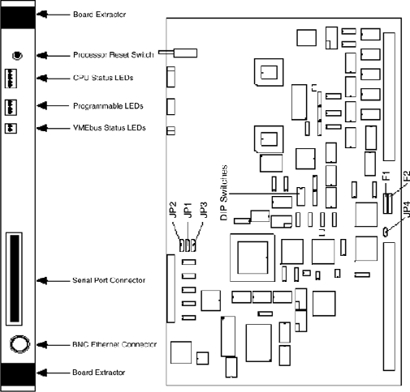

Operating Documentation
Direction 5114045-800, Rev# 10
LightSpeed 4.X Service Information (Advanced)
Operating Documentation |
The CPU board will undergo a Power-Up Self-Test that lasts approximately 18 seconds. After the proper setting of the EPROMs, DIP switches and board jumpers, the CPU board will be placed into a VME chassis. A properly terminated Thin-net cable must be attached to the board’s BNC connector. This cable is necessary for the Ethernet self tests to complete successfully. No other boards need to be present.
Upon power-up, the self test begins, the LED display is at the value ‘E’ and the test will perform the instruction Set and EPROM Checksum Test. When the test is done, the LED value will proceed to the next descending value, ‘D’, and will perform the RAM verification test. In the same manner, when this test is done, the LED value will proceed to ‘C’, then ‘B’, then ‘A’ and finally to ‘9’. After the test at ‘9’, the self test is now done.
When the test is completed, the LED values displayed will indicate if any tests have failed. If a failure is detected, the EPROMs, DIP-switch settings, Ethernet cable, and the board jumpers should be rechecked to ensure proper setup. Then the self test should be rerun. The board must pass the test before shipment. See Figure 8-43 for location of these LEDs.
Table 1: STC CPU (Artesyn III) Board Power Up LEDs
| LED # 1234 | LED HEX | LED ASSIGNMENT | DURATION |
|---|---|---|---|
| xxxo | E | Instruction Set and EPROM Checksum Test | 1 second |
| xxox | D | RAM Verification | 13 seconds |
| xxoo | C | CIO Unit Test | 0.3 seconds |
| xoxx | B | Internal Loop Back | 1 second |
| oxox | A | External Loop Back | 1 second |
| oxxo | 9 | Transmit Test | 1 second |
| x = on o = off | |||
Illustration 1: STC CPU (Artesyn III) Board Layout
